ModelCompareUnivariate.RmdThe objective of this vignette is to show how to use the ModelCompareUnivariate object to compare multiple potential models.
library(tswgewrapped) library(tswge) #> Warning: package 'tswge' was built under R version 3.5.3
data("airlog")
# Woodward Gray Airline Model
phi_wg = c(-0.36, -0.05, -0.14, -0.11, 0.04, 0.09, -0.02, 0.02, 0.17, 0.03, -0.10, -0.38)
d_wg = 1
s_wg = 12
# Parzen Model
phi_pz = c(0.74, 0, 0, 0, 0, 0, 0, 0, 0, 0, 0, 0.38, -0.2812)
s_pz = 12
# Box Model
d_bx = 1
s_bx = 12
theta_bx = c(0.40, 0, 0, 0, 0, 0, 0, 0, 0, 0, 0, 0.60, -0.24)
models = list("Woodward Gray Model A" = list(phi = phi_wg, d = d_wg, s = s_wg, vara = 0.001357009, sliding_ase = FALSE),
"Woodward Gray Model B" = list(phi = phi_wg, d = d_wg, s = s_wg, vara = 0.001357009, sliding_ase = TRUE),
"Parzen Model A" = list(phi = phi_pz, s = s_pz, vara = 0.002933592, sliding_ase = FALSE),
"Parzen Model B" = list(phi = phi_pz, s = s_pz, vara = 0.002933592, sliding_ase = TRUE),
"Box Model A" = list(theta = theta_bx, d = d_bx, s = s_bx, vara = 0.001391604, sliding_ase = FALSE),
"Box Model B" = list(theta = theta_bx, d = d_bx, s = s_bx, vara = 0.001391604, sliding_ase = TRUE)
)#### With n_step.ahead = TRUE (Default)
mdl_compare = ModelCompareUnivariate$new(data = airlog, mdl_list = models,
n.ahead = 36, batch_size = 72)
#>
#> Batch Size has not been specified. Will assume a single batch.
#> Batch Size has not been specified. Will assume a single batch.
#> Batch Size has not been specified. Will assume a single batch.NULLp = mdl_compare$plot_multiple_realizations(n.realizations = 4, seed = 100, plot = "realization", scales = 'fixed')
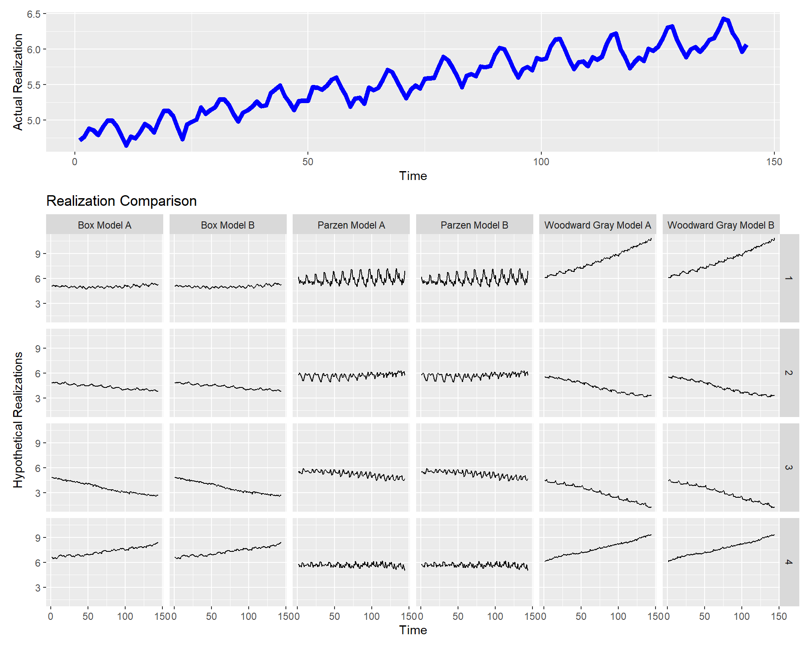
p = mdl_compare$plot_multiple_realizations(n.realizations = 4, seed = 100, plot = c("acf", "spectrum"), scales = 'fixed')
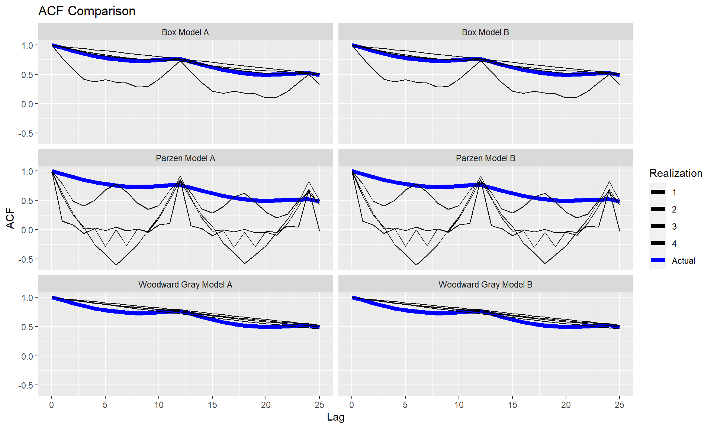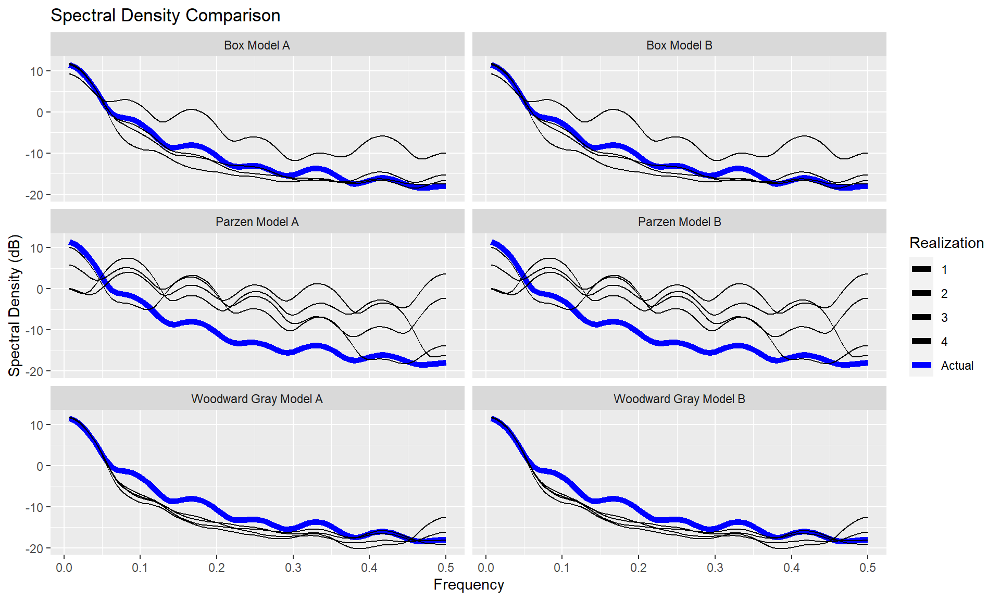
mdl_compare$statistical_compare() #> Df Sum Sq Mean Sq F value Pr(>F) #> Model 2 0.001460 0.0007298 2.197 0.192 #> Residuals 6 0.001993 0.0003322 #> #> #> Tukey multiple comparisons of means #> 95% family-wise confidence level #> #> Fit: aov(formula = ASE ~ Model, data = results) #> #> $Model #> diff lwr upr #> Parzen Model B-Box Model B 0.028566162 -0.01709432 0.07422664 #> Woodward Gray Model B-Box Model B 0.003429999 -0.04223048 0.04909048 #> Woodward Gray Model B-Parzen Model B -0.025136163 -0.07079665 0.02052432 #> p adj #> Parzen Model B-Box Model B 0.2134940 #> Woodward Gray Model B-Box Model B 0.9712778 #> Woodward Gray Model B-Parzen Model B 0.2838256 #> Call: #> aov(formula = ASE ~ Model, data = results) #> #> Terms: #> Model Residuals #> Sum of Squares 0.001459617 0.001993128 #> Deg. of Freedom 2 6 #> #> Residual standard error: 0.01822602 #> Estimated effects may be unbalanced
p = mdl_compare$plot_simple_forecasts(lastn = TRUE, limits = FALSE)
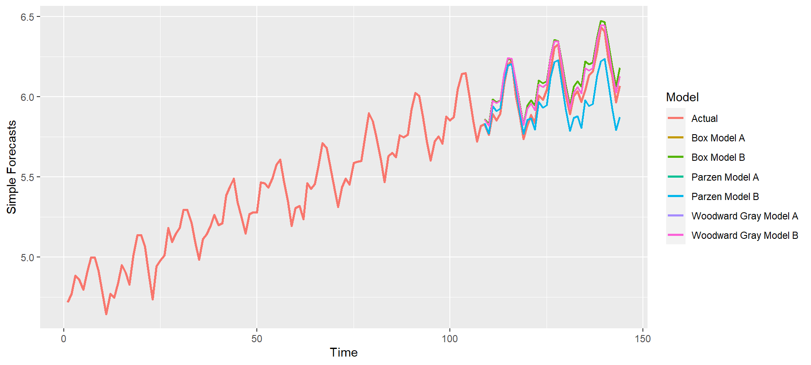
p = mdl_compare$plot_simple_forecasts(lastn = TRUE, limits = TRUE)
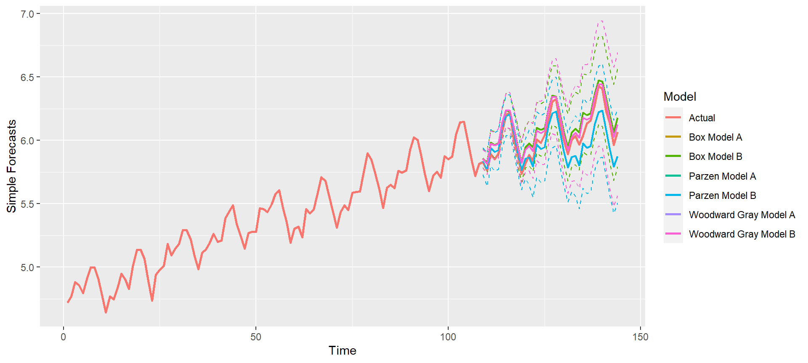
p = mdl_compare$plot_simple_forecasts(lastn = FALSE, limits = FALSE)
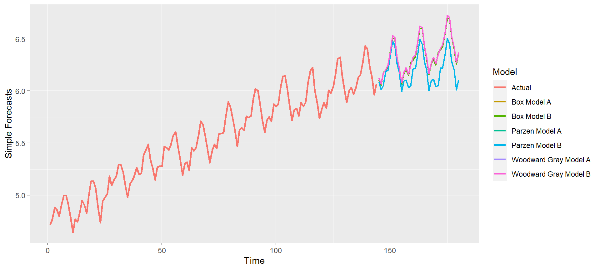
p = mdl_compare$plot_simple_forecasts(lastn = FALSE, limits = TRUE)
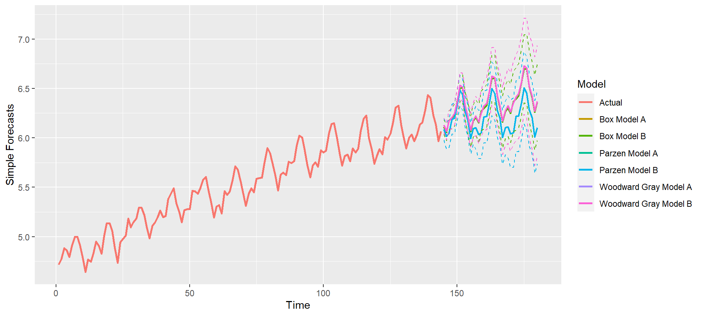
p = mdl_compare$plot_simple_forecasts(zoom = 50) ## Zoom into plot
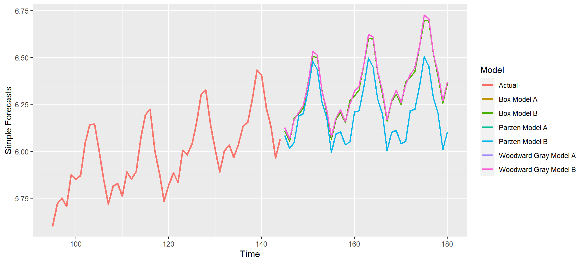
p = mdl_compare$plot_batch_forecasts(only_sliding = TRUE) #> Warning: Removed 108 row(s) containing missing values (geom_path).
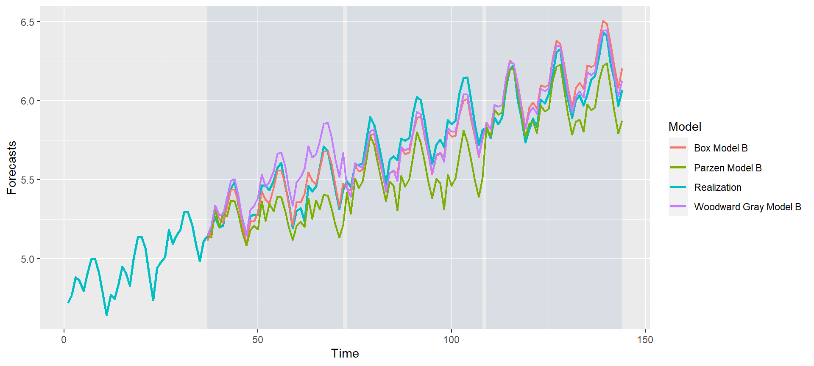
#> Warning: Removed 108 row(s) containing missing values (geom_path).
#> Warning: Removed 108 row(s) containing missing values (geom_path).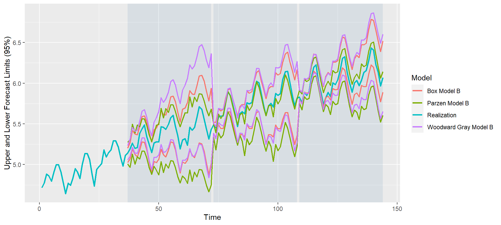
ASEs = mdl_compare$get_tabular_metrics(ases = TRUE) print(ASEs) #> # A tibble: 12 x 5 #> Model ASE Time_Test_Start Time_Test_End Batch #>#> 1 Woodward Gray Model A 0.00419 109 144 1 #> 2 Woodward Gray Model B 0.0193 37 72 1 #> 3 Woodward Gray Model B 0.00563 73 108 2 #> 4 Woodward Gray Model B 0.00419 109 144 3 #> 5 Parzen Model A 0.0125 109 144 1 #> 6 Parzen Model B 0.0227 37 72 1 #> 7 Parzen Model B 0.0693 73 108 2 #> 8 Parzen Model B 0.0125 109 144 3 #> 9 Box Model A 0.00690 109 144 1 #> 10 Box Model B 0.00261 37 72 1 #> 11 Box Model B 0.00762 73 108 2 #> 12 Box Model B 0.00862 109 144 3
forecasts = mdl_compare$get_tabular_metrics(ases = FALSE) print(forecasts) #> # A tibble: 1,008 x 5 #> Model Time f ll ul #>#> 1 Woodward Gray Model A 1 NA NA NA #> 2 Woodward Gray Model A 2 NA NA NA #> 3 Woodward Gray Model A 3 NA NA NA #> 4 Woodward Gray Model A 4 NA NA NA #> 5 Woodward Gray Model A 5 NA NA NA #> 6 Woodward Gray Model A 6 NA NA NA #> 7 Woodward Gray Model A 7 NA NA NA #> 8 Woodward Gray Model A 8 NA NA NA #> 9 Woodward Gray Model A 9 NA NA NA #> 10 Woodward Gray Model A 10 NA NA NA #> # ... with 998 more rows
## Add initial set of models (without sliding ASE)
models = list("Woodward Gray Model A" = list(phi = phi_wg, d = d_wg, s = s_wg, vara = 0.001357009, sliding_ase = FALSE),
"Parzen Model A" = list(phi = phi_pz, s = s_pz, vara = 0.002933592, sliding_ase = FALSE),
"Box Model A" = list(theta = theta_bx, d = d_bx, s = s_bx, vara = 0.001391604, sliding_ase = FALSE)
)
mdl_compare = ModelCompareUnivariate$new(data = airlog, mdl_list = models,
n.ahead = 36)
#>
#> Batch Size has not been specified. Will assume a single batch.
#> Batch Size has not been specified. Will assume a single batch.
#> Batch Size has not been specified. Will assume a single batch.NULL# Following will give an error because we are trying to add models with the same name again # mdl_compare$add_models(mdl_list = models)
## Add models with Sliding ASE
models = list("Woodward Gray Model B" = list(phi = phi_wg, d = d_wg, s = s_wg, vara = 0.001357009, sliding_ase = TRUE),
"Parzen Model B" = list(phi = phi_pz, s = s_pz, vara = 0.002933592, sliding_ase = TRUE),
"Box Model B" = list(theta = theta_bx, d = d_bx, s = s_bx, vara = 0.001391604, sliding_ase = TRUE)
)
# This will give warning for batch size which has not been set.
# Internally it will be set to use just 1 batch since nothing has been specified.
mdl_compare$add_models(mdl_list = models) # This will give a warning and set only 1 batch
#> Warning in self$set_batch_size(self$get_batch_size()): You have provided
#> models that require sliding ASE calculations, but the batch size has been
#> set to NA. Setting the batch size to the length of the realization.
#> Warning in self$compute_metrics(step_n.ahead = private$get_step_n.ahead()):
#> Metrics have already been computed for Model: ' Woodward Gray Model A '.
#> These will not be computed again.
#> Warning in self$compute_metrics(step_n.ahead = private$get_step_n.ahead()):
#> Metrics have already been computed for Model: ' Parzen Model A '. These
#> will not be computed again.
#> Warning in self$compute_metrics(step_n.ahead = private$get_step_n.ahead()):
#> Metrics have already been computed for Model: ' Box Model A '. These will
#> not be computed again.
#>
#> Batch Size has not been specified. Will assume a single batch.
#> Batch Size has not been specified. Will assume a single batch.
#> Batch Size has not been specified. Will assume a single batch.NULL
# mdl_compare$add_models(mdl_list = models, batch_size = 72) ## This will not give a warning# If you had forgotten to set the batch size, you can do it after the fact mdl_compare$set_batch_size(72) #> Warning in self$compute_metrics(step_n.ahead = private$get_step_n.ahead()): #> Metrics have already been computed for Model: ' Woodward Gray Model A '. #> These will not be computed again. #> Warning in self$compute_metrics(step_n.ahead = private$get_step_n.ahead()): #> Metrics have already been computed for Model: ' Parzen Model A '. These #> will not be computed again. #> Warning in self$compute_metrics(step_n.ahead = private$get_step_n.ahead()): #> Metrics have already been computed for Model: ' Box Model A '. These will #> not be computed again. #> NULL # Check all functions after data manipulation p = mdl_compare$plot_simple_forecasts(zoom = 72)
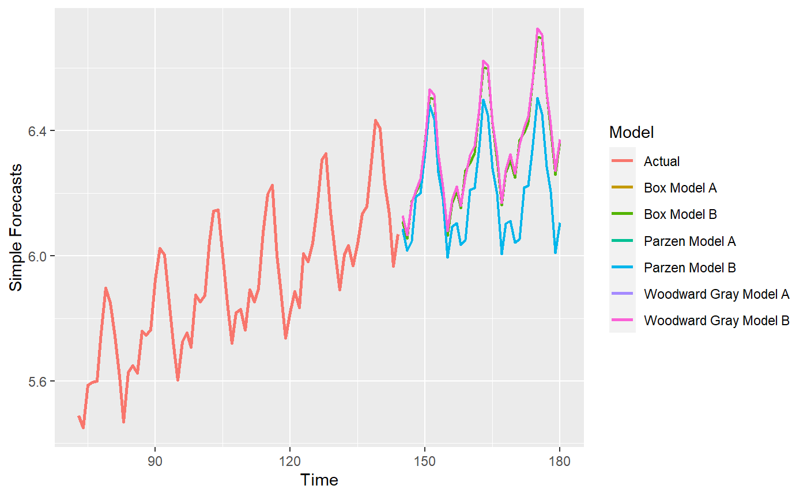
p = mdl_compare$plot_batch_forecasts(only_sliding = TRUE) #> Warning: Removed 108 row(s) containing missing values (geom_path).
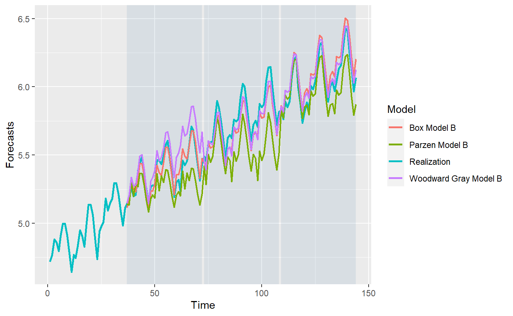
#> Warning: Removed 108 row(s) containing missing values (geom_path).
#> Warning: Removed 108 row(s) containing missing values (geom_path).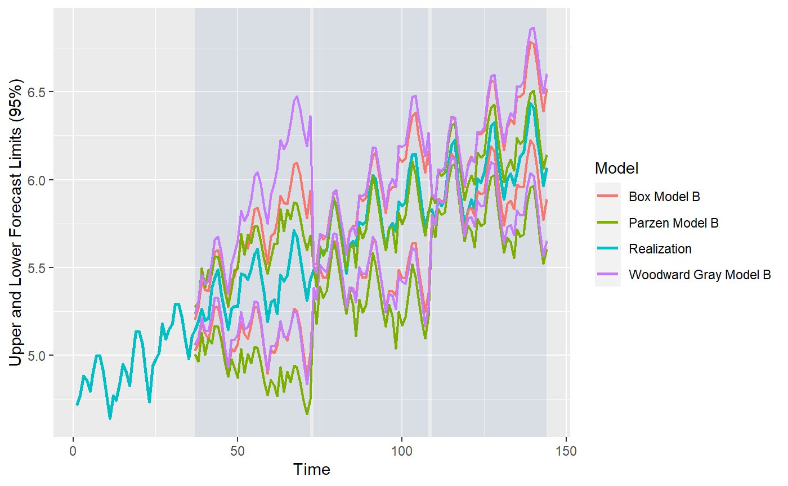
p = mdl_compare$plot_batch_ases(only_sliding = TRUE) #> Warning: Removed 108 row(s) containing missing values (geom_path).
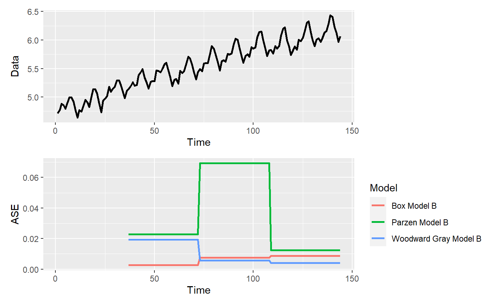
p = mdl_compare$plot_boxplot_ases()
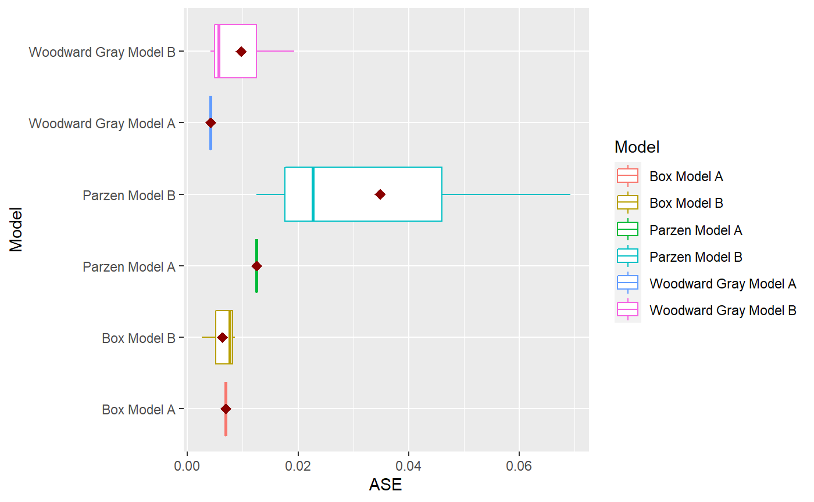
mdl_compare$statistical_compare() #> Df Sum Sq Mean Sq F value Pr(>F) #> Model 2 0.001460 0.0007298 2.197 0.192 #> Residuals 6 0.001993 0.0003322 #> #> #> Tukey multiple comparisons of means #> 95% family-wise confidence level #> #> Fit: aov(formula = ASE ~ Model, data = results) #> #> $Model #> diff lwr upr #> Parzen Model B-Box Model B 0.028566162 -0.01709432 0.07422664 #> Woodward Gray Model B-Box Model B 0.003429999 -0.04223048 0.04909048 #> Woodward Gray Model B-Parzen Model B -0.025136163 -0.07079665 0.02052432 #> p adj #> Parzen Model B-Box Model B 0.2134940 #> Woodward Gray Model B-Box Model B 0.9712778 #> Woodward Gray Model B-Parzen Model B 0.2838256 #> Call: #> aov(formula = ASE ~ Model, data = results) #> #> Terms: #> Model Residuals #> Sum of Squares 0.001459617 0.001993128 #> Deg. of Freedom 2 6 #> #> Residual standard error: 0.01822602 #> Estimated effects may be unbalanced
## After comparison, maybe you want to remove some models that are not performing well or you do not want to show in your plots
mdl_names = c("Woodward Gray Model A", "Parzen Model A", "Box Model A", "Parzen Model B")
# Remove models
mdl_compare$remove_models(mdl_names = mdl_names)
#>
#> Model: 'Woodward Gray Model A' found in object. This will be removed.
#> Model: 'Parzen Model A' found in object. This will be removed.
#> Model: 'Box Model A' found in object. This will be removed.
#> Model: 'Parzen Model B' found in object. This will be removed.
# Check all functions after data manipulation
p = mdl_compare$plot_simple_forecasts()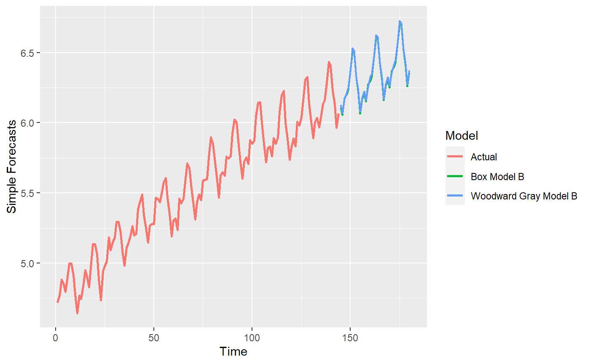
p = mdl_compare$plot_batch_forecasts() #> Warning: Removed 72 row(s) containing missing values (geom_path).
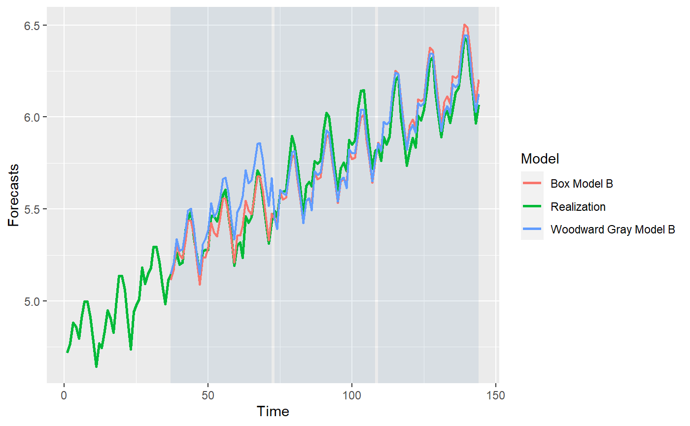
#> Warning: Removed 72 row(s) containing missing values (geom_path).
#> Warning: Removed 72 row(s) containing missing values (geom_path).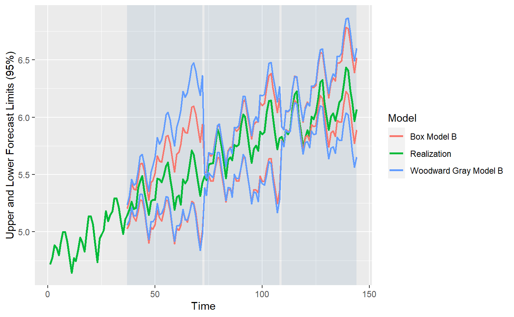
p = mdl_compare$plot_batch_ases() #> Warning: Removed 72 row(s) containing missing values (geom_path).
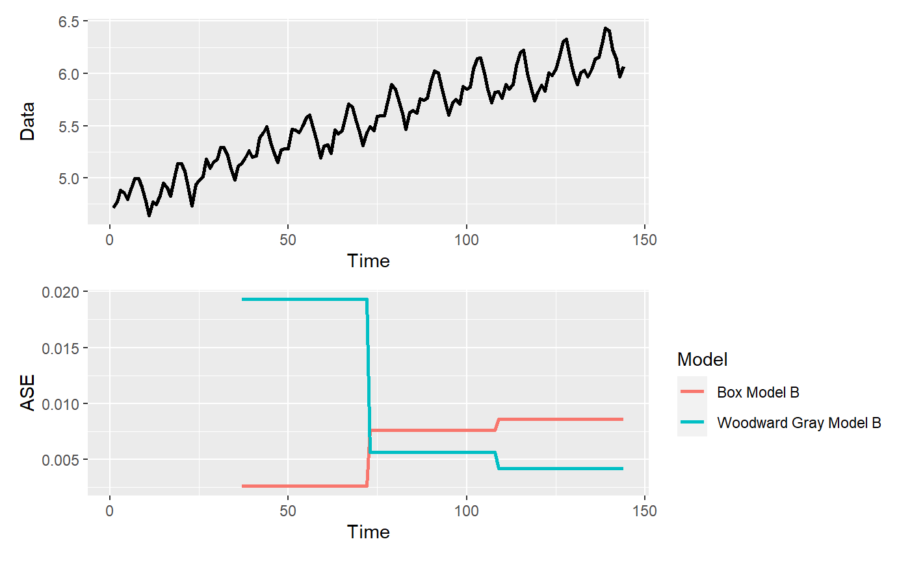
p = mdl_compare$plot_boxplot_ases()
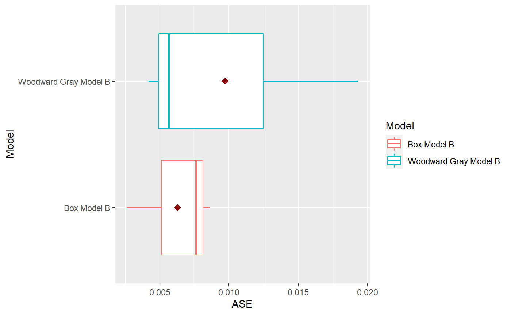
mdl_compare$statistical_compare() #> Df Sum Sq Mean Sq F value Pr(>F) #> Model 1 1.765e-05 1.765e-05 0.44 0.543 #> Residuals 4 1.603e-04 4.008e-05 #> #> #> Tukey multiple comparisons of means #> 95% family-wise confidence level #> #> Fit: aov(formula = ASE ~ Model, data = results) #> #> $Model #> diff lwr upr #> Woodward Gray Model B-Box Model B 0.003429999 -0.01092239 0.01778238 #> p adj #> Woodward Gray Model B-Box Model B 0.5432795 #> Call: #> aov(formula = ASE ~ Model, data = results) #> #> Terms: #> Model Residuals #> Sum of Squares 1.764734e-05 1.603310e-04 #> Deg. of Freedom 1 4 #> #> Residual standard error: 0.006331094 #> Estimated effects may be unbalanced